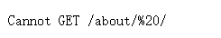

hexo中的nexT主题菜单栏选项跳转时出现Cannot GET /tags/%20/
刚接触hexo博客nexT主题，默认只有首页和归档两个菜单项，为了让菜单栏显得不那么空旷，按照教程添加分类、标签、关于菜单项
完全按照教程做完之后，点击首页、关于、标签等菜单项，无法跳转到自己想看的界面，会出现如下图显示的界面。
一开始看就感觉是路径问题，而20%是空格的编码。由于之前吃了很多次这种配置文件空格或者中英文标点的问题，就改了主题下的_config.yml配置文件，把menu中||前的空格去掉，保存后再次尝试发现果然好了。
1 | menu: |
让人感觉奇怪的点在于这个空格是next主题文件配置里面自带的，所以一出问题总觉得是自己添加菜单项时出了问题，没想过改配置文件，浪费了大量的时间